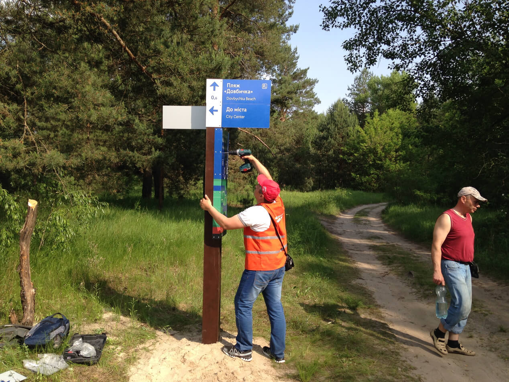
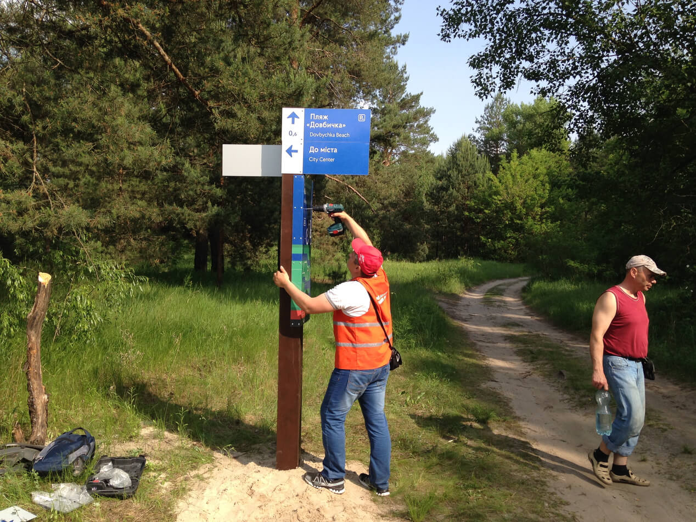

Велонавігація: Труханів острів, Троєщина
Пілотний проект велонавігації «Довбичка» на Трухановому острові створювався за участю Асоціації велосипедистів Києва.
Протягом трьох місяців кропіткої роботи було спроектовано і встановлено нові знаки, схеми та покажчики. І вже до Дня Києва, 26 травня 2015 року, любителі велопрогулянок з усього міста змогли оцінити новий маршрут під номером «101».
Проблема
«Довбичка» — популярне місце як для піших, так і для велопрогулянок.
Мальовниче, але, в той же час, дике і недоглянуте. Від основної дороги є безліч відгалужень, в яких легко заблукати.
Місцями зустрічаються небезпечні ділянки, де важко пройти, особливо на велосипеді. Деінде маршрутом активно пересуваються автомобілі, створюючи неабияку загрозу для людей.
В глибині острова знаходиться доволі відомий нудистський пляж Довбичка.
У чому виклик?
Виявилося, що Труханів — досить агресивне середовище. Загроза з боку вандалів і мисливців за металом істотно обмежує вибір матеріалів і способи установки навігації.
Знаки повинні добре виділятися на тлі дерев і кущів. Крім того, інфраструктура, що склалася ще в 90-ті, могла також вплинути на реалізацію проекту
Дослідження
Ми проїхали маршрут на велосипедах, щоб відчути на власному досвіді всі його особливості. Зустрілися з місцевими активістами, велосипедистами, підприємцями та обговорили з ними проблеми острова.
Склали детальну карту маршруту з прив’язкою по GPS і визначили точки прийняття рішень, на яких повинні бути встановлені знаки.
Склали список загальних вимог:
- Міцність, вандалостійкість
- Контраст, добра видимість на тлі ландшафту
- Стійкість до погодних умов
- Відсутність цінності для мисливців за металом
- Сучасний зовнішній вигляд
- Масштабованість, можливість застосування на інших маршрутах
Ідеї
Спочатку ми планували робити навігацію з металу, як стандартну дорожню.
Але через високий рівень вандалізму змінили своє рішення на користь металокомпозиту зі світловідбиваючою плівкою. Для опор ми обрали товстий оброблений дерев’яний брус: і красиво, і надійно.
Дизайнерськими «родзинками» стали загнутий край знаків, який робить їх помітніше і міцніше, а також зрізаний під кутом верх опор, на якому була закріплена міні-схема маршруту. Завдяки ній на кожній точці велосипедист може визначити, де він знаходиться, і це вдалося зробити без великих стендів із картою.
Тестування
Для тесту ми використовували прості картонні прототипи, аби перевірити свої гіпотези у реальних умовах.
Тестували знаки на різній відстані і висоті, в тому числі, рухаючись на велосипеді.
Перші прототипи
Впровадження
Разом з радником мера з розвитку велоінфраструктури Ксенією Семеновою ми контролювали хід установки на місці.
Часу було мало, всі роботи треба було завершити до Дня Києва.
Робота проходила у два етапи: спочатку по всьому маршруту встановлювались дерев’яні опори, які засипали щебенем й бетонували. Потім на них монтували самі знаки.
Нову навігацію встановили протягом одного дня. Загалом — 78 різноманітних схем та вказівників.
 

Висновки
Пілотний проект «Довбичка» добре масштабується. Нещодавно разом із Асоціацією велосипедистів Києва ми розробили вказівники веломаршруту на Троєщину. Зараз проектуємо велонавігацію для НК «Експоцентр України» (ВДНГ).